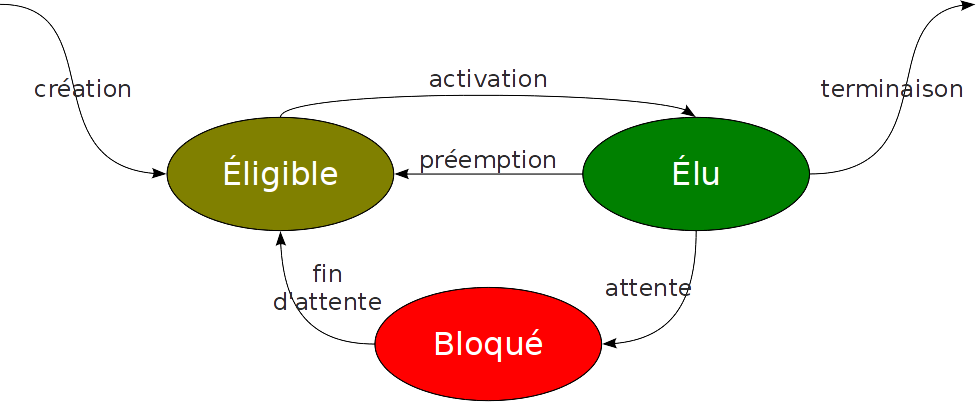
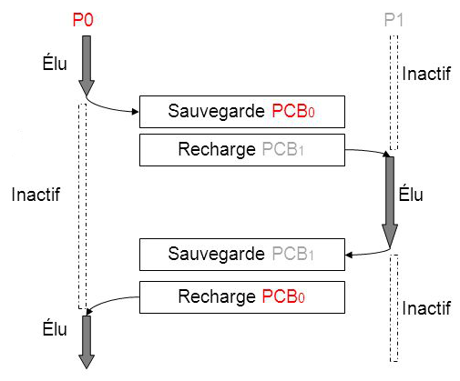
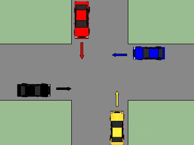

Comment s'organise une caisse de supermarché, pour gérer la file d'attente des clients, sachant que celle-ci ne traite qu'un client à un instant $T$ donné ?
Si on fait une analogie entre une caisse de supermarché et un système d'exploitation, la problématique est la même...

Comment s'organise un Système d'exploitation, pour gérer la file d'attente des processus, sachant qu'un processeur ne traite qu'un processus à un instant $T$ donné ?
Définition
| Terme | Définition |
|---|---|
| Programme | Entité statique, composée d'une suite d'instructions. |
| Processus | Entité dynamique qui matérialise un programme en cours d'exécution avec ses propres ressources physiques et logiques. |
| Ressource | Élement qui contribue à la progression d'un processus (matériel ou logiciel) |
| Processeur | Composant matériel responsable de l'exécution des instructions d'un processus chargé en mémoire. Il est capable d'effectuer des opérations arithmétiques et logiques. |
Processeur
Rappel Cf. Machine Von Neumann
- Caractéristique principale : Fréquence.
- Exemple : un processeur cadencé à 300 MHz possède 300 millions de cycles d'horloge par seconde.
- Cycle d'horloge : Unité élémentaire de temps d'un ordinateur, correspond à un battement du microprocesseur.
- Chaque instruction nécessite au moins un cycle d'horloge pour s'exécuter.
Etat et cycle de vie du processus
- Élu : en train de s’exécuter sur un processeur,
- Éligible : en attente d’un processeur pour s’exécuter,
- Bloqué : en attente d’un événement (ex: interruption) ; ne peut donc pas s’exécuter pour l’instant.

Structure d'un processus
Un processus est représenté par une structure appelée Bloc de contrôle (BCP / Process Control Block (PCB))
Cette structure se situe dans une zone mémoire accessible uniquement par le Système d'Exploitation.
Gestion de Processus
Un système d’exploitation dispose de 2 modules pour gérer les processus :
- Ordonnanceur :
- Met en ordre des processus qui demandent le processeur,
- Sélectionne celui qui peut disposer du temps processeur.
- Dispatcheur :
- Intervient quand un processus se termine ou se bloque,
- Commutation de contexte : consiste à sauvegarder l'état d'un processus pour restaurer à la place celui d'un autre.

Les objectifs sont :
- Maximiser l’utilisation du processeur,
- Présenter un temps de réponse acceptable,
- Respecter l’équité entre les processus selon le critère d’ordonnancement utilisé.
Algorithme d'ordonnancement
Les algorithmes d'ordonnancement de processus sont classés en deux types de stratégie :
- Ordonnancement coopératif (sans réquisition) : les processus ne sont pas interrompus, l'ordonnanceur ne choisit un nouveau processus que dans le cas où le processus en cours termine son exécution ou attend une entrée/sortie,
- Ordonnancement préemptif (avec réquisition) : l’ordonnanceur peut interrompre un processus encours d’exécution si un nouveau processus de priorité plus élevée est inséré dans la file des Prêts.
FCFS - First-come First-served
Etant donné un ensemble $E$ de processus éligibles :
- Le premier arrivé est admis immédiatement et s'exécute tant qu'il n'est pas bloqué ou terminé.
- Lorsqu'il se bloque, le processus suivant commence à s'exécuter et le processus bloqué va se mettre au bout de la file d'attente.
Utilisations : Mac OS < 9, première version de MS DOS, Windows 3.1x
Soit l'ensemble $E$ de processus suivant :
| Processus | Durée (en ms) |
|---|---|
| P1 | 21 |
| P2 | 3 |
| P3 | 6 |
| P4 | 2 |
Établir le diagramme de séquences d'exécutions des processus.
Calculer le temps d'attente moyen des processus.
| Avantages | Inconvénients |
|---|---|
| l'algorithme est simple (c'est une simple liste chaînée), l'ordonnancement est équitable. | pas de minimisation du temps moyen d'attente des processus. |
SJF - Shorted Job First
Etant donné un ensemble $E$ de processus éligibles : sera élu par l'ordonnanceur, le processus dont on suppose que le traitement sera le plus court.
Soit l'ensemble $E$ de processus suivant :
| Processus | Durée (en ms) |
|---|---|
| P1 | 21 |
| P2 | 3 |
| P3 | 6 |
| P4 | 2 |
Établir le diagramme de séquences d'exécutions des processus.
Calculer le temps d'attente moyen des processus.
| Avantages | Inconvénients |
|---|---|
| Temps d'attente minimal (Plus de processus sont exécutés dans un temps plus court). | Basé sur la connaissance à priori du temps d'exécution des processus. |
RR - Round Robin
Autrement appelé Algorithme du Tourniquet.
Etant donné un ensemble $E$ de processus éligibles, chaque processus reçoit tour à tour un intervalle de temps appelé quantum.
Au terme de ce quantum ou, si le processus s'achève ou se bloque avant cet instant, l'ordonnanceur attribue directement le processeur au processus suivant.
Soit l'ensemble $E$ de processus suivant :
| Processus | Durée (en ms) |
|---|---|
| P1 | 21 |
| P2 | 3 |
| P3 | 6 |
| P4 | 2 |
Établir le diagramme de séquences d'exécutions des processus, en considérant un quantum de 5ms.
Calculer le temps d'attente moyen des processus.
| Avantages | Inconvénients |
|---|---|
| Equité d'exécution des processus, chacun a un temps fixe pour s'exécuter. | Très dépend du choix du quantum.
Des quanta courts provoqueraient trop de commutations de processus et la proportion du temps consacré à ces changements de contexte deviendrait trop importante. Des quanta longs, ce seraient les temps de réponse aux processus interactifs qui en pâtiraient. La valeur du quantum est couramment fixée aux alentours de 20 à 50 ms. |
Priority CPU Scheduling = ordonnancement avec priorité
Une valeur de priorité est assignée à chaque processus,
Etant un ensemble $E$ de processus éligibles, est élu celui qui a la priorité la plus élevée.
Soit l'ensemble $E$ de processus suivant :
| Processus | Durée (en ms) | Priorité |
|---|---|---|
| P1 | 21 | 2 |
| P2 | 3 | 1 |
| P3 | 6 | 4 |
| P4 | 2 | 3 |
Établir le diagramme de séquences d'exécutions des processus.
Calculer le temps d'attente moyen des processus.
Phénomène de famine possible lorsqu'un processus de priorité haute s'exécute alors qu'un processus de priorité faible est déjà exécuté.
En 1973, quand l'ordinateur IBM 7904 du MIT fut arrêté, un processus de priorité faible fut découvert, soumis en 1967, soit 6 ans plus tôt, n'ayant pas encore été exécuté.
Ordonnancement avec priorité dynamique multi-niveaux
- Algorithme basé sur plusieurs files, ordonnées par priorité,
- Lorsqu’un processus se bloque, il retourne dans la même file,
- Lorsqu’il épuise son quantum, il passe dans la file prioritaire suivante,
- Pour chaque file d'attente, on applique l'algorithme du Tourniquet (avec potentiellement un quantum différent)
- Utilisation : Windows > 2000, mac OS
Gestion des ressources
L’exécution d’un processus nécessite un ensemble de ressources (mémoire principale, disques, fichiers, périphériques, etc.) qui lui sont attribuées par le système d’exploitation.
L’utilisation d’une ressource passe par les étapes suivantes :
- Demande de la ressource,
- Utilisation de la ressource,
- Libération de la ressource.
Situation d'interblocage
- 4 voitures arrivent à un croisement, sans signalisation particulière, et veulent passer,
- Si les conducteurs appliquent tous le code de la route, avec la règle de la priorité à droite, aucune n'avance,
- La route est bloquée indéfiniment.
